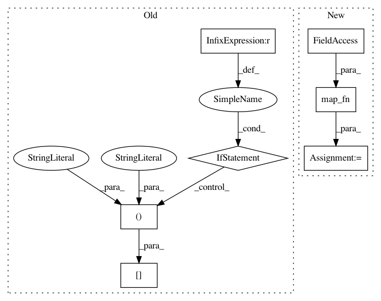

e6ce836b2925a677d0924e8859439937ba5808dc,gpflow/conditionals/mo_conditionals.py,,_conditional,#Any#Any#Any#Any#,73
Before Change
kern_list = kernel.kernels if isinstance(kernel, Combination) else [kernel.kern] * len(
feature.features)
Knns = tf.stack([k(Xnew, full=full_cov) for k in kern_list], axis=0)
Knns = tf.transpose(Knns)[:, :, None] if len(Knns.shape) == 2 else Knns // [P, N, 1]
fs = tf.transpose(f)[:, :, None] // [P, M, 1]
// [P, 1, M, M] or [P, M, 1]
q_sqrts = tf.transpose(q_sqrt)[:, :, None] if len(q_sqrt.shape) == 2 else q_sqrt[:, None, :, :]
def single_gp_conditional(Kmm, Kmn, Knn, f, q_sqrt):
return base_conditional(Kmn, Kmm, Knn, f, full_cov=full_cov, q_sqrt=q_sqrt, white=white)
dtypes = (Kmms.dtype, Kmms.dtype)
// rmu, rvar = tf.map_fn(lambda x: single_gp_conditional(x[0], x[1], x[2], x[3], x[4]),
// (Kmms, Kmns, Knns,fs, q_sqrts), dtype=dtypes)
for i in range(Knns.shape[0]):
single_gp_conditional(Kmms[i, :, :], Kmns[i, :, :], Knns[i, :], fs[i, :, :], q_sqrts[i,
:, :])
// [P,
// N, 1], [P, 1, N, N] or [P, N, 1]
After Change
return base_conditional(Kmn, Kmm, Knn, f, full_cov=full_cov, q_sqrt=q_sqrt, white=white)
// [P, N, 1], [P, 1, N, N] or [P, N, 1]
rmu, rvar = tf.map_fn(single_gp_conditional,
(Kmms, Kmns, Knns, fs, q_sqrts),
(default_float(), default_float()))
fmu = tf.linalg.transpose(rmu[:, :, 0]) // [N, P]
if full_cov:
fvar = rvar[:, 0, :, :] // [P, N, N]
In pattern: SUPERPATTERN
Frequency: 3
Non-data size: 7
Instances
Project Name: GPflow/GPflow
Commit Name: e6ce836b2925a677d0924e8859439937ba5808dc
Time: 2019-03-18
Author: sergio.diaz@prowler.io
File Name: gpflow/conditionals/mo_conditionals.py
Class Name:
Method Name: _conditional
Project Name: dhlab-epfl/dhSegment
Commit Name: c3ac58c90f2fe330eb036744fba3af2c14426fdc
Time: 2018-01-17
Author: seg.benoit@gmail.com
File Name: doc_seg/model.py
Class Name:
Method Name: model_fn
Project Name: RasaHQ/rasa
Commit Name: d4a2f656470e3190f8e877139455abcff1ad7cdb
Time: 2018-09-28
Author: mr.voov@gmail.com
File Name: rasa_core/policies/tf_utils.py
Class Name: TimedNTM
Method Name: __call__